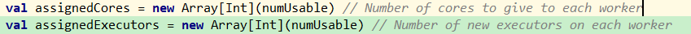
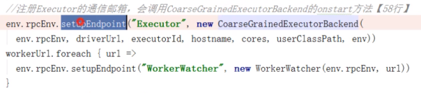
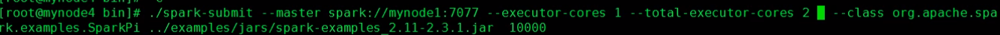

1. 资源调度
1.1 driver的TS向master申请资源，master分配资源，executor向driver中反向注册，然后在worker中启动
1.2 图
文字描述：
1.3 src
1.3.1 回顾启动和提交
{1} 启动集群，分别执行master和worker的脚本，执行Master的main，创建基于netty的RPCEnv通信环境，并且把master的Endpoint对象注册到框架中
{2} 在client执行SparkSubmit，执行SparkSubmit的main，封装参数，创建RPC通信环境把Client的ClientEndPoint注册到环境中，调用Master在随机Worker中创建dirver，然后driver会执行提交的jar的main
{3} 提交，封装参数，启动client的主类，向master发送启动消息，master创建driverDesc，master随机在worker上启动driver，执行提交的jar的主类的main，执行new sparkContext，创建DS和TS，
1.4 创建并启动TS
1.4.1 SparkContext.createTaskScheduler(this, master, deployMode) 根据提交任务的命令匹配处理方法，创建通信对象和TS对象(TaskSchedulerImpl)，并以对偶元组的形式返回
1.5 TS负责资源申请，会创建CoarseGrainedSchedulerBackend的对象来调用start方法。CoarseGrainedSchedulerBackend封装了粗粒度申请资源的方法
1.5.1 backend调用start跟进去会发现调用的是super.start()，而super就是粗粒度的CoarseGrainedSchedulerBackend，作用就是创建driverEndpoint并注册
1.6 通信环境准备好之后，开始申请资源，首先要确定的就是申请多少资源，然后再向master发消息申请？==》创建Command对象，用ApplicationDesc对象封装，然后再用StandaloneAppClient封装

1.6.1 创建一个AppClient对象，执行 StandaloneAppClient的start，AppClient向Master申请资源，调用第二个参数Endpoint的onStart方法。获取master的引用，给master发消息，申请资源
{1} 向所有master注册，因为master会有HA，有多个
{2} masterRef.send就是给master发消息
1.7 回到Master，观测Master怎么处理申请资源的消息
1.7.1 receive方法中用模式匹配判断是否是申请APP的消息，调用createApplication，把ApplicationDesc对象传入。注册App，会在等待注册的app集合中添加。最后执行schedule，这个方法在注册driver中就调用过，用来执行申请资源的逻辑。

1.7.2 schedule会调用startExecutorsOnWorkers()，给app调度资源。先获取资源申请信息，然后遍历worker，过滤出可用的且硬件资源足够的，然后以core空闲数大到小排序。创建Executor。
{1} cluster模式分配driver时是选择worker是随机。但这里选择启动executor的worker时，是按可用资源的大小排序的。

{2} 确定executor的cores数：从app.desc也就是ApplicationDesc对象中获取资源信息
[1] app.desc.coresPerExecutor.getOrElse(1) 就是--executor-core，如果没指定，默认为1
{3} 判断cores数是否分配完毕：app.coresleft 判断是否给application分配够了core，后面每次给application 分配core后 app.coresLeft 都会相应的减去分配的core数
[1] private val requestedCores = desc.maxCores.getOrElse(defaultCores) requestedCores就是默认的总cores数，int的最大值，
[2] usableWorkers： 遍历worker，过滤出可用的且硬件资源足够的，然后以cores空闲数大到小排序
{4} 为每个worker和executor分配资源：val assignedCores = scheduleExecutorsOnWorkers(app, usableWorkers, spreadOutApps) 上面已经获取了可用的worker，现在开始划分并启动executor
[1] 顾名思义，在worer上划分executor，
(1) 一个executor的cores，启动一个executor最少需要1个core
(2) 一个executor的memory
(3) 设置worker和executor的调度信息，master设置完这些信息，之后executor启动时，会向worker要这些资源
1st 获取可用worker的长度，然后创建2个数组，

这2个数组长度是可用的worker，值是每个worker能提供的cores数，。
下图中：
assignedCores数组的意思是一共有5个可用worker，0号worker为app提供了1个core
assignedExecutors的意思是一共有5个可用worker，0号worker为app启动了1个executor
2nd 创建完数组，开始向里面写值
usableWorkers.map(_.coresFree).sum是可用worker一共多少个cores，跟设置的cores取小，得到总的cores
canLaunchExecutor：安全判断 var freeWorkers = (0 until numUsable).filter(canLaunchExecutor)
每台worker上分配几个core，自动几个executor
最终返回assignedCores数组，也就是每台worker的cores
{5} 现在资源已经分配完成，在worker中给executor划分资源，然后启动
[1] allocateWorkerResourceToExecutors==》launchExecutor
1.8 回到worker，反向注册之后启动executor
1.8.1 case
1.8.2 executor先向driver反向注册，然后启动

1.9 资源调度的summary
1.9.1 提交app时，Executor是在集群中分散启动的，有利于计算本地化。这样发送task时，可以选择数据所在的节点，如果executor都在一个节点上，还要拉取数据
{1} 比如--total-executor-cores 设置为2，--executor-cores为1，spark-env.sh中每个executor也设置为1，理论上一个worker上启动一个executor就可以，但spark仍然会分散在2个worker上启动2个executor
1.9.2 默认在命令行不指定任何参数时，即使在spark-env中指定了core和memory，会为每个worker启动1个executor，standalone下，所有cores和1G内存，yarn下，1个core和1G内存
{1} standalone-cluster时，如果一个节点env中指定了2个cores，如果driver也在这个节点上，那么worker会分配1个core，因为driver也要占用1个core
1.9.3 executor的数量同时受core和内存的限制
{1} 想要在1个worker启动多个executor，提交时指定--executor-cores
[1] 比如一共2个worker，每个worker在env中设置了2个cores，如果提交app时，设置了--executor-cores为1，则每个worker会启动2个executor
[2] 一般在1个worker就启动一个executor，只有在内存不足时才会在1个worker上启动多个executor，这样可以让一个worker中为所有executor分配的总内存变多。
{2} 如果内存设置的跟spark-env中设置的一样大，一个worker只会启动1个executor
[1] --executor-memory 2g
1.9.4 如果提交时指定--total-executor-cores指定app最多使用的cores

1.9.5 app任务资源不够时，不会失败而是等待，等前一个app资源释放